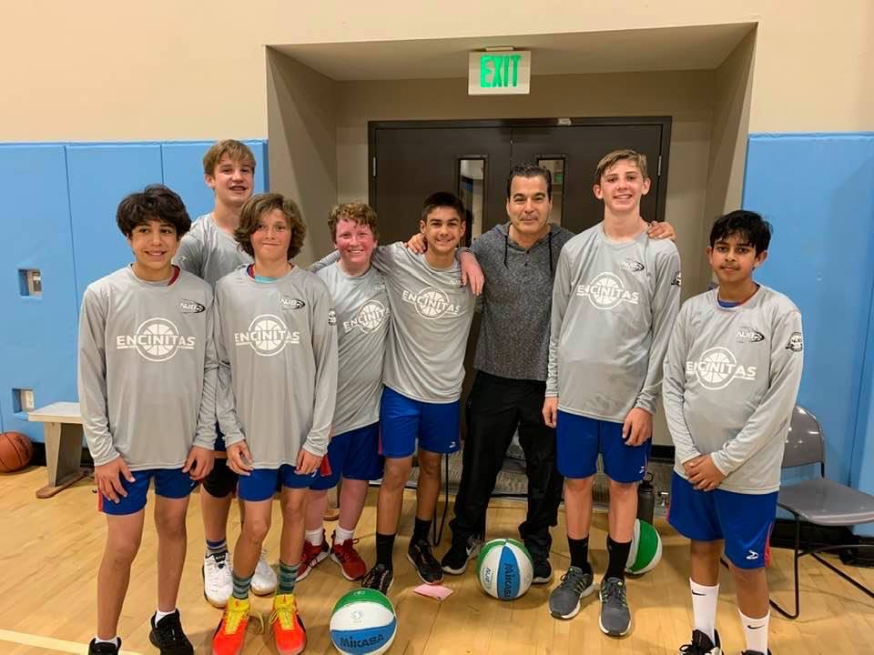

Basketball offered me a leadership role. Being the point guard put me in a position that let me lead my team to victory. On my recreational league team, I had more experience than some of the players. So I gave them tips and in addition to our core offense tried to tell them what to do in complicated situations. The habit of mind this role displayed was Communication and Collaboration. I had many new teammates and needed to figure out weaknesses and strengthsand communicate mine. Being on the school basketball team made school more exciting and gave me something to look forward to.
